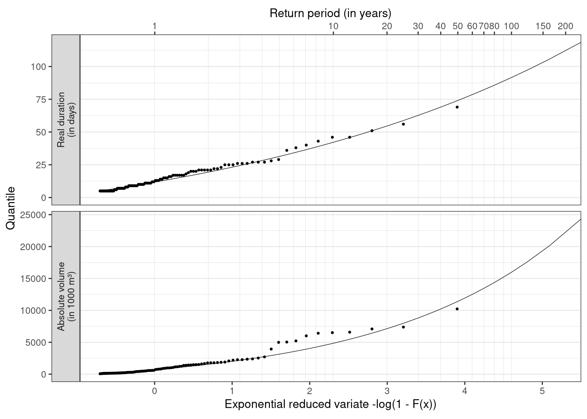

7 Probability plot using the exponential reduced variate
The two-parameter EXP (Equation A6.1.64) and the WEI distribution are compared using the exponential reduced variable (Box 6.4).
fitted.fast <- am %>%
mutate(
prob.emp = rank(flow) / (n() + 1),
prob.wei = cdfwei(x = flow, para = pelwei(lmom, bound = 0)),
prob.exp = cdfexp(x = flow, para = pelexp(lmom))
) %>%
arrange(flow) %>%
print()## # A tibble: 50 x 5
## year flow prob.emp prob.wei prob.exp
## <dbl> <dbl> <dbl> <dbl> <dbl>
## 1 2014 2.17 0.0196 0.0472 0
## 2 2012 2.34 0.0392 0.0644 0
## 3 1982 2.46 0.0588 0.0806 0
## 4 2008 2.53 0.0784 0.0913 0
## 5 1977 2.59 0.0980 0.101 0
## 6 2007 2.64 0.118 0.109 0
## 7 1972 2.66 0.137 0.113 0
## 8 2004 2.68 0.157 0.115 0
## 9 1973 2.88 0.176 0.158 0.0876
## 10 2003 2.99 0.196 0.184 0.173
## # … with 40 more rowsBy substituting \(y\) into the expression for \(F(x)\), \(y\) can be expressed as \(-\ln(1 - F(x))\) (Equation B6.4.6). The parameters of the EXP distribution are estimated using L-moments (Equation A6.1.72) and used to calculate \(y\) and subsequently, \(F(x)\).
The non-exceedance probability \(F(x)\) for the observations is determined using the Weibull plotting position formula (Equation 6.6).
The \(AM(1)\) values are plotted against the reduced variate in Figure 6.11. A reduced variate of \(0.02\) corresponds to a return period of \(50.5\) years for minimum values (Equation 6.5). The data will plot as a straight line given they follow the EXP distribution. Again it is demonstrated that the WEI distribution fits the extreme low flow values well, and also the upper range apart from the three largest values. The two-parameter EXP distribution is less suited to model the sample. Alternatively, \(-\ln(X)\) could be plotted on a Gumbel probability paper, and a straight line would result provided the data fitted the WEI distribution.
Figure 7.1: Figure 6.11: The annual minimum 1-day flow, AM(1), plotted against the reduced variate, y, of the EXP distribution for River Ngaruroro at Kuripapango (NZ); the observations (marked as points), the two-parameter EXP distribution (continous line) and the two-parameter WEI distribution (dashed line).
7.1 Worked Example 6.2: Drought deficit frequency analysis
7.1.1 Data
River Ngaruroro at Kuripapango in New Zealand, applied for frequency analysis of annual minimum series in Worked Example 6.1, is here applied for frequency analysis of drought deficit characteristics.
library(tidyverse)
library(hydroDrought)
pooled## # A tibble: 100 x 5
## event year first.day duration volume
## <int> <dbl> <date> <dbl> <dbl>
## 1 7 1967 1968-02-17 21 1767.
## 2 8 1967 1968-03-11 23 2350.
## 3 10 1968 1969-03-25 9 197.
## 4 11 1968 1969-04-06 13 786.
## 5 13 1969 1969-11-17 6 241.
## 6 15 1969 1970-01-25 14 578.
## 7 16 1969 1970-02-28 17 981.
## 8 17 1970 1970-12-08 7 130.
## 9 24 1970 1972-02-03 7 297.
## 10 25 1970 1972-02-13 20 1394.
## # … with 90 more rowsThe pooled drought events obtained in Worked Example 5.4 (Section 5.4.1) can be concieved as a partial duration series (PDS) because after removing 77 minor droughts only 100 events above and equal to the following thresholds remained in the series.
threshold ## # A tibble: 2 x 2
## metric threshold
## <chr> <dbl>
## 1 duration 5
## 2 volume 51Two drought characteristics are analysed in the following: drought deficit volume and real drought duration as defined in Worked Example 5.4.
Drought events were selected for River Ngaruroro and details of the selection criteria are given in Worked Example 5.4. The series cover the period 1964 to 2018 and the start of the year is set to 1 September.
A total of eight years were omitted from the series, 1963/64, 1965/66, 1977/78, 1978/79, 1986/87, 1987/88, 2001/02 and 2019/20, due to missing data. As a result 49 years remained in the dataset.
As only events below the \(Q_{90}\) percentile are selected, it might happen that the flow never becomes less than the threshold in a year (non-drought year).
A total of five out of the 49 years with observations did not experience a drought (34.7%). The PDS series of drought deficit volume and real duration are plotted in Figure 6.12. Less severe values are found in the second half of the observation period for both deficit volume (upper) and duration (lower). The data are still treated as one sample as the number of observations is considered insufficient for a separate analysis of two periods. It should further be noted that a similar trend towards less severe droughts is not as pronounced for the \(AM(1)\) values (Worked Example 6.1). This is likely a result of the high base flow contribution in the catchment (Figure 6.6).

Figure 7.2: Figure 6.12 PDS of drought deficit volume (upper) and real duration (lower) for River Ngaruroro at Kuripapango (NZ).
7.1.2 Derivation of distribution function
in the Journal of Statistical Software there is an article describing the extremes package.
Their approach is identical to Equation 6.11 in the first edition of the book.
“The quantiles of the GP df are easily obtained by setting Equation 5 equal to \(1 - p\) and inverting. However, the quantiles of the GP df cannot be as readily interpreted as return levels because the data no longer derive from specific blocks of equal length. Instead, an estimate of the probability of exceeding the threshold, e.g., called \(\zeta_u\) , is required. Then, the value \(x_m\) that is exceeded on average once every \(m\) observations (i.e., an estimated return level) is”
\[ x_m = u + \frac{\sigma_u}{\xi} \left[ (m \zeta_u)^\xi - 1\right] \] with \(m\) being the return period and \(\zeta_u\) the overall exceedance rate (= average number of exceedances per year). So the return period is just multiplied with the exceedance rate. \(u\) is the location parameter of the GPA (= threshold), \(\sigma_u\) is scale and \(\xi\) is shape. In our case \(\zeta_u = \frac{\text{length of PDS}}{\text{record length in years}}\).
This transformation will introduce return periods of less than a year (or negative probabilities) for values \(P_{PDS} < 1 + \zeta_u\). Return periods for PDS of less than a year just imply that such an event occurs on average several times a year.
\[P_{annual} = 1 - \frac{(1 - P_{PDS})}{\zeta_u}\]
I’ve seen PDS return periods < 1 for example in Return Periods of Hydrological Events, Rojsberg 1976. I’ve also looked at his approach of relating PDS and AMS. But for return periods > 10 years quantiles of the AMS and PDS are practically identical, irrespective of the exceedance rate.
Following Zelenhasic & Salvai (1987) an estimate of the non-exceedance probability, \(F(x)\), for the largest event in each time interval is in Nizowka obtained by combining the distribution for the occurrence of events and the distribution for the magnitudes of deficit volume or duration. Here a time interval of one year is chosen. Subsequently the return period in years for a given event can be calculated. The number of drought events occurring in a time period t is commonly assumed to be Poisson distributed (Equation 6.9) with parameter \(\lambda t\). In Nizowka the binomial Pascal distribution is offered along with the Poisson distribution as described in ‘Background Information NIZOWKA’ (Software, CD). The distribution that best fitted deficit volume was the Pascal distribution for the number of droughts and the GP distribution for the deficits. For duration the Pascal distribution was chosen along with the Log-Normal distribution. The \(F(x)\) is for drought deficit volume plotted in Figure 6.13 together with the observed values plotted using a plotting position. The chosen distribution describes the data well, with the exception of some values in the upper range. The maximum value is, however, satisfactorily modelled.
library(lmom)
rp <- c(10, 100, 200)
prob.annual <- 1 - c(1 / rp)
annual2pds <- function(prob.annual, exc.per.year) {
1 - (1 - prob.annual)/exc.per.year
}
pds2annual <- function(prob.pds, exc.per.year) {
1 - (1 - prob.pds) * exc.per.year
}
observations <- pooled %>%
select(duration, volume) %>%
mutate(across(everything(), as.numeric)) %>%
pivot_longer(cols = everything(), names_to = "metric") %>%
nest(data = value) %>%
left_join(threshold, by = "metric")
fitted <- observations %>%
mutate(
rate = map2_dbl(data, data, ~(nrow(.x) / nrow(complete))),
parameter = map2(data, threshold, ~pelgpa(samlmu(.x$value), bound = .y))
) %>%
print()## # A tibble: 2 x 5
## metric data threshold rate parameter
## <chr> <list> <dbl> <dbl> <list>
## 1 duration <tibble [100 × 1]> 5 2.04 <dbl [3]>
## 2 volume <tibble [100 × 1]> 51 2.04 <dbl [3]>
7.1.3 Calculation of the T-year event
The return period of a given event is calculated following Equation 6.4. The relationship between the drought characteristics as defined in Worked Example 5.4 and \(F(x)\) are given by the tabulated distribution functions in Nizowka. The design value for a particular return period, i.e. the T-year event, can be obtained from the tables for known values of \(F(x)\). The estimated 10-, 100- and 200-year drought events are shown in Table 6.2.
## # A tibble: 3 x 6
## prob.annual rp.annual rp.pds prob.pds duration volume
## <dbl> <dbl> <dbl> <dbl> <dbl> <dbl>
## 1 0.9 10. 20.4 0.951 42.1 4841.
## 2 0.99 100. 204. 0.995 91.7 15995.
## 3 0.995 200. 408. 0.998 112. 22159.7.1.4 Manual computation
Tobias: pearhaps mention that one should not forget to set the lower bound of the GPA (location parameter) equal to the threshold.
(parameter <- pelgpa(samlmu(pooled$duration), bound = 5))## xi alpha k
## 5.0000000 8.7770258 -0.2128228prob.annual <- 1 - 1/ c(10, 100, 200)
prob.pds <- annual2pds(prob.annual, exc.per.year = 100 / 49)
# Quantiles of the GPA
quagpa(f = prob.pds, para = parameter)## [1] 42.11736 91.67007 112.00200